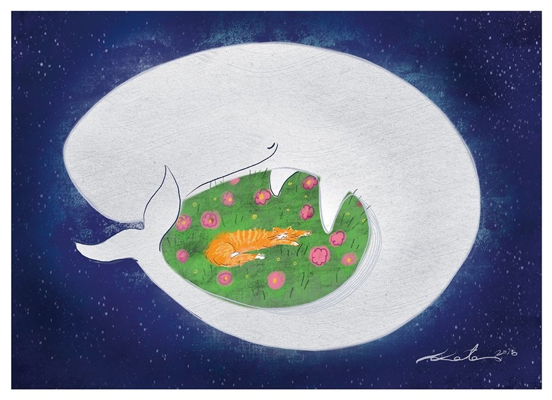

The 52 Hz whale was first detected in the Pacific Ocean in 1989. The song it sings is at a frequency of 52 Hertz, which cannot be heard by other whales. Its existence seems not only unique but also lonesome. Recently, controversies have arisen over the issue of whether the 52 Hz whale can be understood by others. Inspired by the mystery surrounding this little-known beast, Wei Te-Sheng’s new film is about how lonely voices can be answered, even in a metropolis like Taipei, where individuals have to cope with the challenges posed by isolation and alienation. As a musical film, 52 Hz, I Love You presents a series of romances happening one Valentine’s Day.